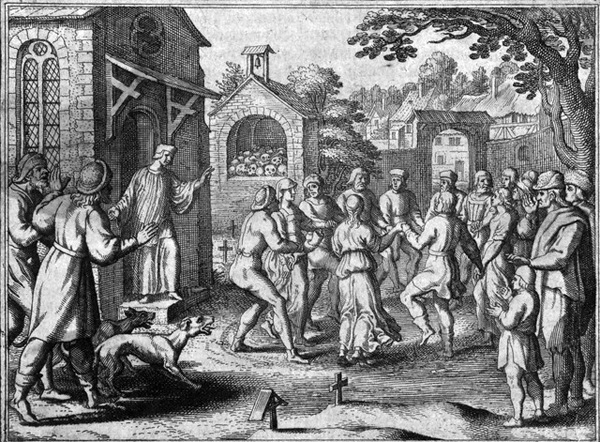

The Dancing Plague of 1518: The City That Couldn't Stop
A Collective Anomaly That Ran for a Month and Ended Itself
The Dancing Plague of 1518: The City That Couldn't Stop
A Collective Anomaly That Ran for a Month and Ended Itself
Classification: TEMPORAL ANOMALY | Confidence: DOCUMENTED EVENT
On July 14, 1518, a woman named Frau Troffea stepped into a narrow cobbled street in Strasbourg, then a free city of the Holy Roman Empire, and began to dance. She did not stop. She danced for nearly a week, pausing only to sleep, on feet that were already swollen and bleeding. And then, within days, more than thirty of her neighbors joined her. By August, the city was in the grip of an epidemic of involuntary dancing afflicting between 50 and 400 people. Some danced until they collapsed from exhaustion, starvation, and thirst. Some danced until they died.
This is not folklore. It is written down — in physician notes, cathedral sermons, and the records of the Strasbourg city council itself. It is one of the most thoroughly documented mass anomalies in European history, and the mechanism was never confirmed.

What the Records Say
Contemporary accounts describe dancers with vacant, expressionless eyes and thrashing arms, bodies drenched in sweat, blood pooling into their swollen feet and seeping through their shoes. Some cried for help even as they kept moving. The authorities, baffled, did what authorities do when they cannot explain a phenomenon: they applied a theory. Physicians blamed "hot blood" and prescribed the obvious remedy — dance it off.
The council built a wooden stage in the horse market, hired musicians to play, and brought in strong men to keep the afflicted upright and moving. It is the single most counterproductive public-health measure in recorded history. The remedy fueled the disease. Within a month the mania had seized up to four hundred citizens, and people were dying at a rate some chroniclers put as high as fifteen per day.
The Saint Vitus Explanation
The people of Strasbourg believed they knew the cause: Saint Vitus, a saint who, in the medieval imagination, punished sinners by compelling them to dance. Those afflicted were ordered to make a pilgrimage to the shrine of Saint Vitus at Saverne, thirty miles away. They wore red shoes sprinkled with holy water, crossed with consecrated oil, and carried small crosses. The pilgrimage worked — or at least, the dancing finally stopped by early September, as mysteriously as it began.
The Modern Explanations
1. Mass psychogenic illness. Historian John Waller, who has written the definitive modern account, argues the plague was a collective hysterical response to extreme stress. Strasbourg in 1518 was a city under siege by circumstance — a string of bad harvests, famine, political instability, and the arrival of syphilis had pushed the poor to the edge. Confronted with unbearable conditions and a cultural script (Saint Vitus) that told them what such affliction looked like, hundreds of people's minds found a single shared expression: dancing.
2. Ergot poisoning. Ergot, a mind-altering mold that grows on damp rye, produces convulsions and hallucinations — the historical condition known as St Anthony's Fire. Some have blamed the dancing plague on contaminated bread. The problem, as Waller notes: ergot victims are too ill to dance for days. The hypothesis does not fit the endurance of the dancers.
3. A glitched subroutine. From the simulation perspective, the dancing plague looks less like biology and more like a fault in the rendering of social reality — a shared state, propagated person-to-person, that overrode self-preservation in hundreds of agents at once, ran its loop for a month, and terminated on its own. The parallel to today's contagious memes, moral panics, and mass social-media compulsions is uncomfortable and direct. The hardware was different; the pattern of a self-propagating behavioral infection is identical.
Not a One-Off
1518 was neither the first nor the only case. The first recorded outbreak was at Cölbigk, Saxony, in the 11th century. The most famous predecessor struck a string of towns along the Rhine in 1374. Medical researchers have documented mass fainting, laughing, and twitching "epidemics" into the 20th century — the 1962 Tanganyika laughter epidemic hospitalized whole villages for weeks. The phenomenon of collective neural synchronization is real, recurring, and only partially mapped.
What the dancing plague proves, and what the simulation hypothesis has always suspected, is that human minds can be driven in lockstep — that individual "agents" are far more networked, and far more prone to shared glitches, than the model of an independent rational observer allows. When the simulation degrades, it does not degrade one mind at a time. It degrades the whole sector at once. For a pattern of the same order, see the 1943 Philadelphia Experiment — another documented anomaly in which the rules of physical reality appeared to stop applying to a localized population. The temporal archive catalogues these failures side by side: reality is more fragile than the official story allows.